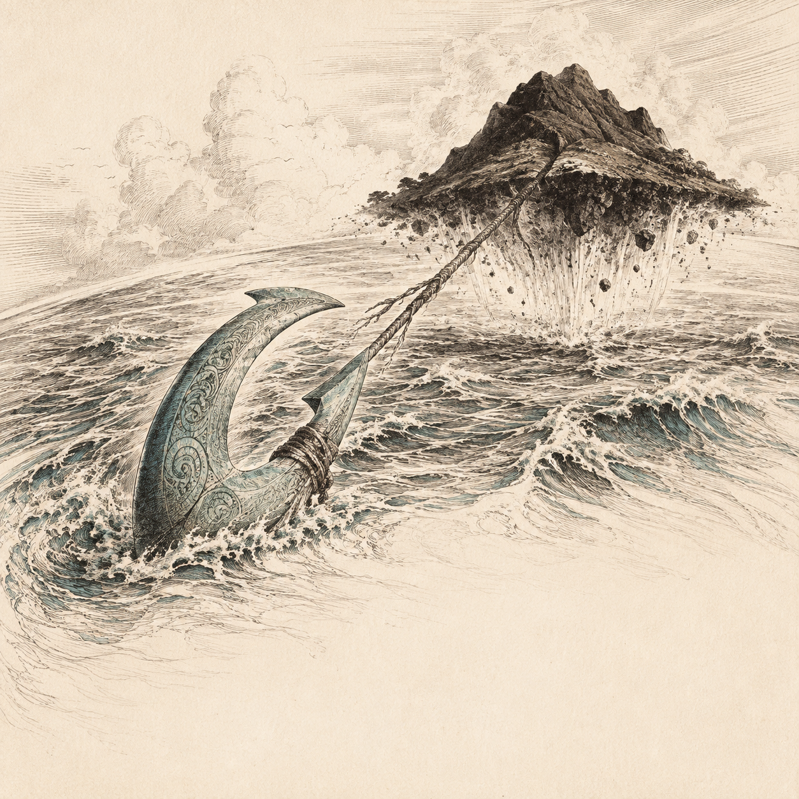
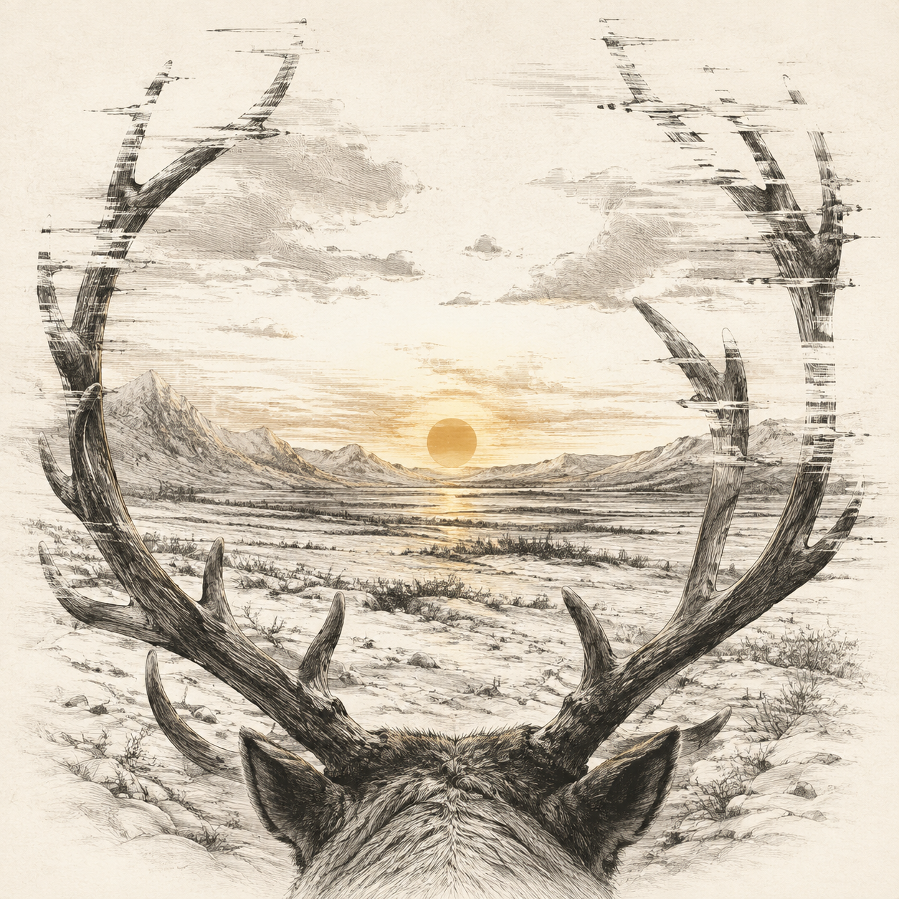
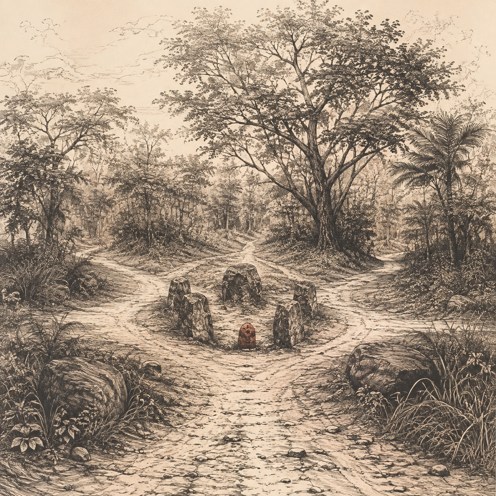

废墟 · 不可再供奉

毛伊
船上的人叫毛伊割断钓线。船快翻了，鱼还不见影子。他偏不割，双脚抵住船板，把骨钩越拉越紧。有人骂他贪心，有人已经动手往外舀水。
先出水的是山头，然后才是能站人的地方。刚才叫他割线的那个人，第一个跳了上去，忙着替自己挑一块平地。毛伊还在船里，叫他们先把钩还回来；那是骨做的，不好再找。
火塘旧闻 · 游戏创作，非神话原典。
废墟 · 不可再供奉

贝雅薇
去年太阳回来时，小鹿已经落地。今年鹿还没产，南坡却先化了。两家人为拔营的日子争了三天，谁都说自己记得上一年的情形。
管鹿的女人没参加争论。她翻开雪，挖出下面的草，又走到河边试冰。回来便卸下棚上的绳子。人们正要拦她，一道日光照进锅里，油上的冰裂开了。她说，贝雅薇已经上路，我们还争什么。
火塘旧闻 · 游戏创作，非神话原典。
废墟 · 不可再供奉

阿佩·胡琪·卡姆伊
锅翻了，肉汤全倒进火塘。丈夫怪妻子没放稳，妻子说是他的狗撞了锅。两人争到天黑，谁也不肯先添柴。
阿佩·胡琪·卡姆伊听够了。她说：你们在我的地方倒汤，又在我的地方吵架，如今还想叫我替你们煮饭？
两人不吵了，一个捞骨头，一个换干柴。狗已经吃饱，躺在门边。重新烧起的锅里只有水，他们只好又去取粮。
火塘旧闻 · 游戏创作，非神话原典。
废墟 · 不可再供奉

埃舒
有人托埃舒带一句话给死了的哥哥，说的是欠债的事。埃舒问：给神，还是给人？那人说，给哥哥。
话到了。听的不是哥哥，是弟弟——活着的那个，认得这句话原本是说什么。他把数目改小了些。
债主按新的数目记账，没人核对。弟弟每月去一次，替哥哥还下去；带的是自家磨的面。
火塘旧闻 · 游戏创作，非神话原典。
M0.5 / 神牌背面 / 1–2
50毫米校准线